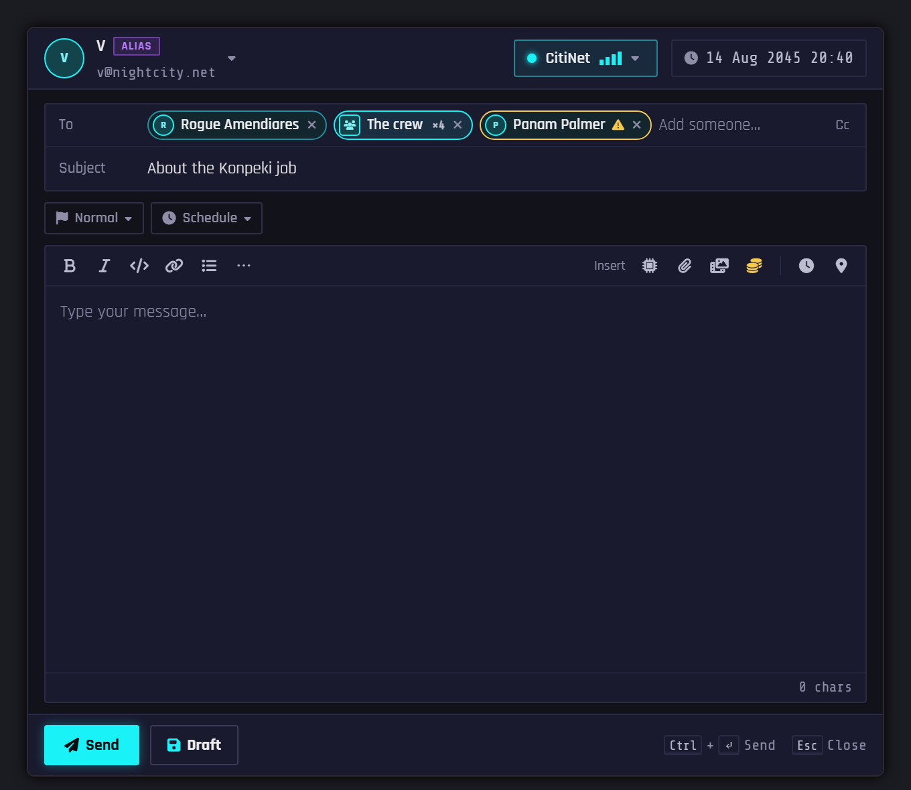
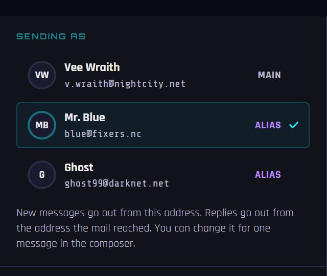
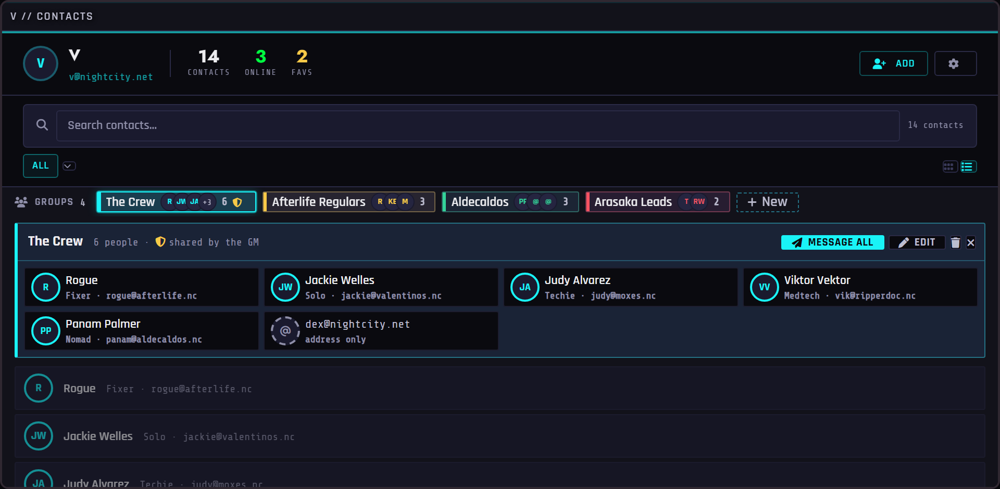

Your character's phone, mail and hacking tools. This guide covers everything a player needs. Your GM decides which parts your game uses, so you may not see all of it.
Open this guide again any time with the ? button at the top of your inbox.
Contents
// PART 01Your Agent

Click Open Inbox in Foundry's left-hand toolbar (the envelope under the satellite dish icon). The first time, it asks you to:
- Pick your character, if you own more than one.
- Pick your email address: a name plus a domain, like
v.wraith@nightcity.net. It suggests names based on your character. Your GM decides which domains exist.
That's all the setup there is. NPCs and other players can now message you at that address.
Click your portrait at the top left of the inbox to open the Identity panel: your address, your aliases, your network, your other characters, and Log Out.
Networks are at the top of the window. You only see networks that reach the scene you're on. A padlock means the network needs a password or a skill check. A network shown as Jammed or Node down is out on this scene for now. Some messages only open on certain networks.
// PART 02Reading mail
- Folders: Inbox, Sent, Saved, Trash and Spam. Mark all read sits at the end of the filter row, and Unread on an open message marks it unread again.
- Threads: click the Thread button on a message to see the whole conversation in one view.
- Reply All: a message sent to several people shows a party chip next to the To line and a Reply All button beside Reply.
- Share to chat: posts a message as a chat card. Anyone reading the card who doesn't have the sender in their contacts gets an Add contact button on it.
- Money: a message can have eddies attached. Click Claim and the money goes to your character sheet. It can only be claimed once.
- Attached shards: open them from the message. They're also listed on the Shards tab.
- Self-destructing messages: if you get one, read it carefully. It won't be there later.
- Locked messages: some are encrypted and take a skill roll to open.
// PART 03Writing mail

Click Compose. The top line shows who you're sending as, your network and the date. Type a contact's name in To and pick from the list. A group's name adds everyone in it.
The chips under the subject are the delivery options, such as priority and scheduling. Click one to open its panel. The toolbar can attach a shard, a file, a picture or video, or eddies.
Drafts. The composer saves what you're writing every half-minute, and Draft saves it and closes the window. Your character can hold up to twenty drafts. A new composer always opens empty. Your drafts are on the inbox's Drafts tab, or behind the N drafts link at the bottom of the composer.
If a message doesn't go through, the composer tells you why and stays open with Retry, Queue and Save Draft. With no signal, Send turns into Queue: the message waits and goes out when you're back in range.
// PART 04Your addresses and aliases
Your GM can give your character extra addresses: a burner, a cover name, a work account. Each one is an alias. Mail to any of them lands in your one inbox. You can't create aliases yourself, so ask your GM if you want one.

To choose which address you send from:
- Click your portrait at the top left of the inbox.
- Under Sending as, click the address you want.
Every new message now goes out from that address until you change it, even after you close the game. Check the From line before you hit Send. An alias shows a violet ALIAS tag there.
For just one message, click your name at the top of the composer and pick another address. Your default doesn't change.
Replies go out from the address the mail reached, so a message sent to your burner gets answered from your burner. You can change that the same way.
If you have no aliases, you won't see Sending as at all.
Burning an address is different. The flame button beside your address permanently burns it and makes you register a new one. Old mail from it shows as [BURNED]. Don't use it to switch to an alias.
// PART 05Contacts and groups
The Contacts button opens your contact book. You can set trust levels, write notes and mark favorites. When a stranger messages you, use Add to Contacts on the message. Some contacts are protected by ICE and need a skill check to unlock.

Groups sit in a row of chips under the search bar. A group is a named list of your contacts. Make one with New, or your GM can hand you one (it shows a shield). Click a chip to see everyone in it, message them all at once, or edit the list.
// PART 06Shards

A data shard is an item that holds files. Your GM may call them memory chips or something else. You might find one as loot, get one attached to a message, or spot one on the map. Open it from your character sheet, from the message it came with, or from its pin.
A locked shard needs a way in: a password, a key item, a skill check, or a hack. Failing can cost you. You may get locked out for a while, get traced, or damage the shard so its files start to go. Some locks bite back.
Inside are files that look like the real thing: messages, chat logs, spreadsheets, bank accounts, password vaults, photos, camera feeds, dossiers, building plans. Parts of a file can be locked or blacked out, and each lock has its own roll.
Analyze (the magnifier on a file's header) rolls to check whether a file really is what it says it is.
Making your own. If your GM allows it, Encode new on the inbox's Shards tab starts the Shard Encoder: pick a blank, write the files, optionally lock it, and roll. Forged files take a skill roll, and a poor one leaves signs that someone can find.
// PART 07Terminals

A terminal is a computer you log into: a corp workstation, a ripperdoc's records, a street bulletin board. It might be a pin on the map, a place your token walks into, an item, or a link your GM gives you.
Logging in. Pick an account. It may be open, or need a password, a key item or a skill check. Too many misses and you're locked out for a while. Some accounts aren't listed, and you can only reach them by typing a username you learned somewhere else. A login lasts until you close the window.
Inside, a switch picks Mail or Files, unless the machine lays things out differently. On a machine with a command line, click a folder or hint, or type a number to open that row, cd to open a folder, ? for the commands, and logout to change account.
Taking data. Depending on the machine, you can copy a file to your Agent (it lands in your Exfil folder), burn it to a shard, forward it, leak it to chat, sell it, or wipe it. Some of these take a roll, and a miss gets noticed. A denied action tells you why. You can't copy a live camera feed, but you can save a frame, and you may be able to loop or cut the camera.
Operator tools. The OPS menu next to the operator chip holds Upload (leave a file or program on the machine) and System Sweep (look for what someone else left there). A sweep only shows what your roll was good enough to find. It won't tell you if it missed something.
// PART 08Network nodes

A node is a physical box that carries a network into a place: a router, a relay, a mast. Open one to see its signal, its state and what's passing through. Anyone can Connect to its network from there.
A netrunner can Jack in with a skill roll. Inside, you get a number of moves based on your rank. Depending on your rank and your GM's rules, you can switch the node off or on, jam it, tap it for copies of passing mail, open a backdoor past the network's login, insert a program from a shard, sweep for what others left, or wipe your line from its log.
Moves stay spent. Jacking out and back in resumes the same session until it runs out, and coming back raises the node's alert. A failed jack-in counts toward a lockout.
// PART 09Make it yours

The gear button in your inbox opens the Theme Customizer. Only you see your theme.
- Colors, fonts and wallpaper, and a custom name for your Agent.
- Text Size also makes the pop-up dialogs bigger. Contrast helps on a bright screen.
- CRT Film puts a screen film over your windows. Film on terminals & shards dims it or turns it off on machines the GM has styled, on your screen only.
- Sound volume, or turn sounds off.
More than one character? Terminals, shards and nodes act as your operator: the character who rolls, pays and gets paid. An operator chip shows up on those screens when you own several. Check it before you roll. If the wrong character is picked, the wrong character gets the money.
// REFERENCEIf something seems broken
A GM has to be online. When you claim money, decrypt a file, jack into a node or schedule a message, the change goes through the GM's computer. If no GM is connected, it won't happen, and the module says so. Your own composing and reading still work.
You can't see a network, message or file. You may be on the wrong scene or network. Check the network button at the top of your inbox.
Reply is missing. Some senders are one-way system addresses, and some anonymous mail can't be answered.
The wrong character got something. Check the operator chip, and which character your inbox is open as.
Still stuck? Tell your GM what you clicked and what it said. Admin → Messages shows them where each message went and why.